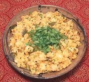

|
Idli UpmaIndia, South - Idli Upma | ||||
| Serves: Effort: Sched: DoAhead: |
2 break ** 30 min Most |
Upmas are a popular breakfast dish in South India and Sri Lanka. This one is made using leftover Idli Rice Cakes. For making Idlis, see our recipe Idli - Rice Cakes. | |||
|
8 5 1 2/3 1/8 2/3 1 ------- 2/3 2 1/16 7 ------- 1 2/3 ------- ar 1-1/2 |
oz in t t T --- t t --- T t --- T |
Idli (1) Onion Chile, green (2) Ginger Turmeric Salt Idli Podi (3) -- Seasonings Urad Dal (4) Chili, dry red Asafoetida (5) Curry Leaves (6) -- Finish Oil Mustard seed (7) -- Garnish Cilantro Lemon Juice |
Prep - (20 min)
|
ibg_idlupm1 201112 - www.clovegarden.com
©Andrew Grygus - agryg@aaxnet.com - Linking to and
non-commercial use of this page is permitted.